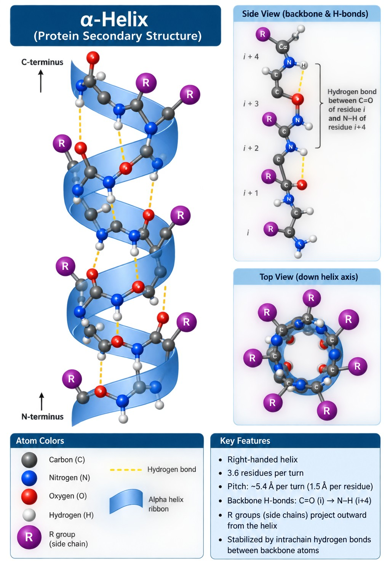
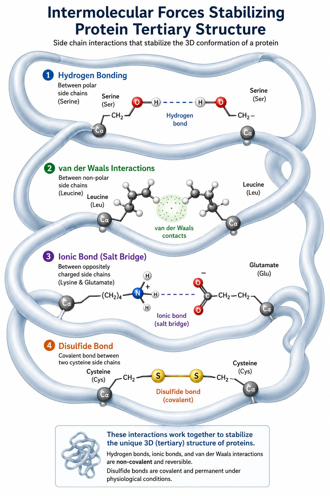
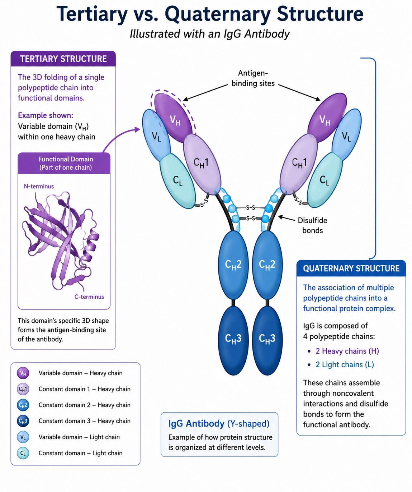

Amino Acid Reference Lab
Before anything else, you need the raw vocabulary: twenty amino acids, each with a name, a three-letter abbreviation, a one-letter abbreviation, and a side chain that determines everything it does inside a protein.
This lab is a lookup tool and a drill, not a lecture. Come back to it whenever a later module names a residue you can't picture. It is ungraded except for the three quick checks at the end.
Explorer
Select any amino acid to see its abbreviations, classification, and side-chain feature. The colored edge on each chip shows its class at a glance.
WHY THIS MATTERS
Every later module assumes you can move between these three names without stopping to think. A question that says "the side chain with a pKa of 6.04" expects you to arrive at histidine, and a sequence written as a string of single letters expects you to read it as residues.
Practice mode
Eight amino acids at random. Supply the one-letter abbreviation and the classification from memory, then check your work. Reshuffle for a new set as many times as you like.
CAN YOU RECALL IT?
Which three-letter abbreviation represents leucine?
Which three-letter abbreviation represents tryptophan?
The one-letter abbreviation Q represents which amino acid?
Amino Acid Anatomy & Classification
The Reference Lab gave you the names. This module asks the more useful question: given a side chain, what will this amino acid do?
The alpha-amino acid framework
Every proteinogenic amino acid is built around one central carbon — the alpha carbon — carrying four attachments. Work out what they are before you read on.
Build it yourself. Drag each label into the bond it belongs on — or tap a label, then tap a slot. Not every label in the tray is used, so place them by what actually belongs on an alpha carbon, not by process of elimination. Get all four bonds right to reveal the explanation.
Chirality
Because the alpha carbon carries four different substituents, amino acids are chiral. Chirality here is usually described with the D/L system, and almost every naturally occurring amino acid is the L form — which corresponds to S in the R/S system.
Two exceptions are worth memorizing now, because they show up on exams:
- Glycine is achiral. Its side chain is a hydrogen, so the alpha carbon has two identical substituents and no stereocenter.
- Cysteine is R. Sulfur outranks the other substituents under the priority rules, so L-cysteine ends up designated R rather than S. Its physical arrangement is the same as the other L-amino acids; only the label changes.
CAN YOU PREDICT IT?
Which set of groups is attached to the alpha carbon of every proteinogenic amino acid?
Which proteinogenic amino acid has no stereocenter?
The L configuration corresponds to which designation in the R/S system?
Grouping the twenty
There is more than one way to sort amino acids, and different questions call for different groupings. Start with the broadest split.
Proteinogenic versus non-proteinogenic
An amino acid is proteinogenic if it is incorporated into proteins during translation, the step where mRNA is read to build a chain. Twenty amino acids meet that definition. Plenty of other amino acids exist in the body as intermediates in biosynthetic pathways, but they are never built into proteins, so they are non-proteinogenic.
Note what this definition does not say. It says nothing about whether the body can make the amino acid — that is the separate essential versus non-essential distinction, and mixing the two up is a common error.
Sorting by side chain
Within the twenty, the useful groupings are all about the R group:
- polar versus non-polar
- acidic, basic, or neutral
- aliphatic versus aromatic
The hydrophobic set
Nine amino acids are grouped as hydrophobic or non-polar, and they divide into three sub-groups:
| Sub-group | Members | What they have in common |
|---|---|---|
| Aliphatic | Gly, Ala, Val, Leu, Ile, Pro | Carbon-and-hydrogen side chains with no ring system or heteroatom |
| Aromatic | Phe, Trp | Ring systems that stack and pack into hydrophobic cores |
| Heteroatom | Met | A sulfur held inside a thioether, so still non-polar overall |
These residues cluster in the interior of a folded protein and along the membrane-facing surface of transmembrane helices, for the same reason oil separates from water.
CAN YOU PREDICT IT?
What makes an amino acid proteinogenic?
Which pair of hydrophobic amino acids carries aromatic side chains?
The polar amino acids
The remaining eleven amino acids carry polar side chains, and they split three ways by what happens to that side chain in water.
| Group | Members | Behaviour |
|---|---|---|
| Polar, neutral | Ser, Thr, Asn, Gln, Tyr | Polar enough to hydrogen bond, but no proton gained or lost at physiological pH |
| Polar, acidic | Asp, Glu, Cys | Can donate a proton; Asp and Glu are fully ionized in the cell |
| Polar, basic | Lys, Arg, His | Can accept a proton; Lys and Arg are fully protonated in the cell |
A NOTE ON CYSTEINE
This course groups cysteine with the acidic amino acids, because its thiol has a measurable pKa of 8.33 and does give up a proton. Some textbooks place cysteine with the polar neutral group instead, since it is only about 10% ionized at physiological pH. Both descriptions are pointing at the same chemistry — a weakly acidic side chain sitting near the boundary. Follow this course's grouping, but understand why the disagreement exists.
Sort the residues
Assign each amino acid to its group. This is practice, not assessment — check as many times as you need.
APPLY WHAT YOU KNOW
Which group contains the basic amino acids?
Threonine belongs to which group?
Module 1 quiz
Eight questions, drawn and shuffled fresh each attempt. Your best score is kept.
Ionization, Zwitterions & pKa
Amino acids contain both an acid and a base, so their charge is never a fixed property — it is a function of the surrounding pH. This module is about predicting that charge rather than memorizing it.
The backbone and the zwitterion
Every amino acid has two ionizable groups on the backbone alone, with reliable pKa ranges:
| Group | pKa range | State at pH 7.4 |
|---|---|---|
| α-carboxylic acid | 1.5 – 2.5 | Deprotonated, negative |
| α-amino group | 9.5 – 10.5 | Protonated, positive |
Physiological pH sits above the carboxyl pKa and below the amino pKa, so both groups are ionized at once. The result is a zwitterion: a molecule with an overall charge of zero that nonetheless contains a full positive and a full negative charge.
The rule underneath all of this is simple and worth stating plainly. When pH is above a group's pKa, the group has given up its proton. When pH is below the pKa, the group is holding onto it. Everything in this module is that one comparison, applied to different numbers.
Set the backbone
A residue is shown at a randomly chosen pH. Decide what each backbone group is doing at that pH — the net charge updates as you go. This is practice, not assessment, so check as often as you like.
CAN YOU PREDICT IT?
What is the typical pKa range of the alpha-carboxylic acid?
Which description defines a zwitterion?
Acidic side chains
Three side chains can donate a proton. Their pKa values differ enough that they behave very differently in the cell.
| Amino acid | Side-chain pKa | At pH 7.4 |
|---|---|---|
| Aspartic acid | 3.86 | More than 99% ionized — negative |
| Glutamic acid | 4.25 | More than 99% ionized — negative |
| Cysteine | 8.33 | About 10% ionized |
Aspartate and glutamate sit three to four pH units below physiological pH, which is far enough that treating them as permanently negative is safe. Cysteine is the interesting one: only a tenth of it is deprotonated, but that thiolate minority is the chemically reactive form, which is why cysteine turns up in active sites out of proportion to how ionized it is.
Notice also that the names change with the charge. Aspartic acid becomes aspartate and glutamic acid becomes glutamate once deprotonated, which is why you see both forms in writing.
Add the side chain
Same task as the previous section, with one more group to track. Now the side chain has its own pKa, and it is the group that decides whether the residue is neutral or carries a real charge.
CAN YOU PREDICT IT?
At physiological pH, what is the state of the aspartic acid side chain?
Given a cysteine side-chain pKa of 8.33, what does that predict at physiological pH?
Basic side chains
Three side chains can accept a proton, and again the pKa spread does the explaining.
| Amino acid | Side-chain pKa | At pH 7.4 |
|---|---|---|
| Arginine | 12.48 | More than 99% protonated — positive |
| Lysine | 10.79 | More than 99% protonated — positive |
| Histidine | 6.04 | About 4% protonated |
Histidine is the outlier and the reason this table matters. Its pKa is the only one anywhere near physiological pH, so it is the only side chain whose protonation state shifts meaningfully with small pH changes. That responsiveness is exactly what an enzyme needs from a residue that has to pick up a proton in one step and release it in the next.
pH explorer
This is the titration picture from the lecture, made movable. Pick a residue, then drag the pH slider: the curves show what fraction of the molecules exist as each species at that pH, and the cards above them show which form is dominant. Watch what happens as you cross each pKa.
APPLY WHAT YOU KNOW
Which side chain has the highest pKa among the proteinogenic amino acids?
Given a histidine side-chain pKa of 6.04, what does that predict at physiological pH?
Which residue is best suited to buffering near physiological pH?
Module 2 quiz
Eight questions, drawn and shuffled fresh each attempt.
From Amino Acids to Peptides
One bond turns a collection of amino acids into a chain. This module covers the vocabulary of that chain, the unusual chemistry of the bond that makes it, and how a sequence is read.
Key terms
Amino acids are linked through peptide bonds, which are amides. The rest of this vocabulary is about chain length and about what to call the pieces.
| Term | Meaning |
|---|---|
| Peptide | A short chain of amino acids linked together |
| Di-, tri-, tetrapeptide | Peptides of 2, 3, and 4 amino acids |
| Oligopeptide | A chain of 20 or fewer amino acids |
| Polypeptide | Any unbranched chain longer than 20 amino acids |
| Residue | An individual amino acid within a chain |
| Peptide bond | The amide linkage between two amino acids |
Two of these trip people up. The 20-residue threshold between oligo- and polypeptide is a convention, so it is worth knowing precisely. And "residue" is used because an amino acid inside a chain has lost atoms during bond formation — it is what remains, not the free molecule.
CAN YOU PREDICT IT?
Which definition describes an oligopeptide?
A peptide bond belongs to which functional group class?
Why the peptide bond is rigid
The bond between the carbonyl carbon of one amino acid and the nitrogen of the next is drawn as a single bond, but it does not behave like one. It resists rotation.
The reason is resonance. The nitrogen lone pair delocalizes into the carbonyl, so the real bond is a hybrid of two structures and carries partial double bond character. Double bonds do not rotate freely, and neither does this one.
Delocalization of the nitrogen lone pair gives the C–N bond partial double bond character.
This rigidity is not a curiosity — it is a requirement. A backbone that rotated freely at every linkage could not hold a defined three-dimensional shape. Compare an ester, where oxygen holds its lone pairs more tightly and donates far less into the carbonyl. Esters have little partial double bond character and are correspondingly flexible.
Cis and trans
Because the bond has double bond character, cis and trans arrangements are both possible. In proteins, trans wins by roughly 1000 to 1, because the cis form pushes the two flanking side chains into each other.
Proline is the exception. Its side chain loops back onto its own backbone nitrogen, so there is much less to clash with, and X-Pro bonds adopt cis geometry far more readily than any other pairing. That single quirk gives proline-containing regions structural motifs no other residue produces.
CAN YOU PREDICT IT?
What accounts for the restricted rotation around a peptide bond?
Compared with an amide, why is an ester linkage more flexible?
Preceding which residue is a cis peptide bond most readily accommodated?
Termini and direction
Every peptide, at any length, has exactly two ends:
- N-terminus — the end with a free amino group
- C-terminus — the end with a free carboxylic acid
Proteins are translated from mRNA starting at the N-terminus and finishing at the C-terminus, and sequences are written the same way. Keeping the two conventions aligned means a written sequence always reads in the order the ribosome built it.
Annotate the peptide
Work through this sequence and answer each question. Practice, not assessment.
APPLY WHAT YOU KNOW
What defines the N-terminus of a peptide?
In the peptide Met–Val–Thr–Ala–Gln, which residue occupies the C-terminus?
Module 3 quiz
Eight questions, drawn and shuffled fresh each attempt.
Protein Structure & Function
Four levels of structure, each built from the one below it. The goal here is not to recite the four names but to say what changes at each step and what holds it together.
The four levels
A protein is a macromolecule of at least one polypeptide chain, and it does an enormous range of jobs: catalysing reactions, transport, DNA replication, structural support, signalling, movement, and immune response. All of that variety comes from structure.
| Level | What it describes |
|---|---|
| Primary | The amino acid sequence |
| Secondary | Local motifs within the chain: alpha helices, beta sheets, tight turns |
| Tertiary | The overall three-dimensional shape of a single polypeptide chain |
| Quaternary | The arrangement of multiple chains, or subunits, in one protein |
One point is easy to miss: not every protein has quaternary structure. A protein built from a single chain stops at tertiary. Every protein, though, has the first three.
Each level is built from the one before it. Only the last is optional.
Walk the four levels
Rather than reading the table again, work up through the levels one at a time. At each step, commit to what has changed and what holds it together before moving on. A wrong answer stays open so you can rethink it.
CAN YOU PREDICT IT?
What does the primary structure of a protein describe?
Which level of structure is absent from a protein built from a single chain?
The alpha helix
An alpha helix is a tightly coiled backbone held together by hydrogen bonds. The pattern is regular: each amide N–H donates to a carbonyl C=O located four residues further along the chain.
Helices can coil either direction, but right-handed is more favorable because it produces fewer steric clashes. In practice, essentially all protein helices are right-handed.

Side view: each dashed line is a hydrogen bond from one residue's C=O to the N–H four residues ahead (i → i+4). Top view, looking straight down the axis: the backbone forms the core and every R group points outward, toward the viewer.
Where the side chains go
The hydrogen-bonded backbone occupies the center of the helix, which pushes every side chain outward. This is a more important detail than it first appears: it means the exterior of a helix can be tailored residue by residue, so one face can be hydrophobic and another polar.
Residues that break helices
- Proline is the strongest disruptor. Within a chain it has no N–H to donate, and its ring prevents the backbone angles a helix requires. Both problems at once.
- Serine, aspartate, and asparagine appear less often in helices. Their short side chains carry hydrogen bond donors and acceptors close to the backbone, where they compete with the helix's own bonding pattern.
PHARMACY CONNECTION
Alpha helices are the most common membrane-spanning motif in proteins, because a helix with hydrophobic side chains presents a greasy outer surface that matches the lipid bilayer. G-protein coupled receptors use seven such helices — and GPCRs are the target of a large share of prescribed drugs. Helices also fit neatly into the major groove of DNA, which makes them a recurring DNA-binding motif.
Helical wheel
A helix turns 100° per residue, so looking straight down the axis, consecutive residues land at 100° intervals around a circle. That view answers a question the side view cannot: which residues end up on the same face?
Load each candidate sequence below and read its wheel. Then click any residue to swap it and watch the hydrophobic face form or break in real time.
Click any residue in the sequence to cycle it through Leu, Ile, Phe, Ala, Ser, Gln, Lys, Glu:
Now classify each candidate. Load each one, read its wheel, and decide.
CAN YOU PREDICT IT?
In an alpha helix, each backbone carbonyl hydrogen bonds to an N–H where?
Where do side chains point in an alpha helix?
Why does proline disrupt an alpha helix?
The beta sheet
A beta sheet is built from linear strands lying alongside one another. Compared with the tight coil of a helix, the chain here is extended. The stabilizing force is the same though — hydrogen bonds between backbone amides, this time running between strands rather than within one coil.
Parallel and antiparallel
Adjacent strands can run either the same N-to-C direction (parallel) or opposite directions (antiparallel). The distinction matters because the hydrogen-bonding geometry differs between the two arrangements.
Arrows point from N-terminus to C-terminus. Dashed lines represent inter-strand hydrogen bonds.
The beta barrel
Beta sheets can adopt a wider range of larger structures than helices can. The best known is the beta barrel: a cylinder of antiparallel strands. A barrel can enclose a hydrophobic ligand in its center, as green fluorescent protein does with its chromophore, or it can span a membrane.
CAN YOU PREDICT IT?
What characterizes an antiparallel beta sheet?
What is a beta barrel?
Tertiary structure
Tertiary structure is the three-dimensional shape of a single polypeptide chain. A typical protein contains many secondary structures, and looking at tertiary structure means asking how those assemble.
Domains
The unit of that assembly is the domain: a region of a protein able to carry out a particular function. A protein can have any number of domains, and they are not independent of one another. One domain often modulates another.
Many kinases show this directly. A regulatory domain switches on the catalytic activity of a separate domain, but only under particular conditions. That kind of action at a distance is allosteric modulation, and pyruvate kinase is a well-studied example.
What holds it together
Tertiary structure is stabilized by several kinds of interaction. Only one of them is covalent, which is worth keeping straight.

The same four interactions from the table below, drawn at the side-chain level. Hydrogen bonds, van der Waals contacts, and ionic bonds are all non-covalent and reversible; only the disulfide bond is covalent.
| Interaction | Covalent? | Typical example |
|---|---|---|
| Hydrophobic and hydrophilic interactions | No | Leucine and valine packing into a buried core |
| Hydrogen bonds | No | A serine hydroxyl to a backbone carbonyl |
| Ionic bonds (salt bridges) | No | Lysine to aspartate |
| Disulfide bonds | Yes | Two cysteine thiols oxidised together |
Match the interaction
Assign each example to the interaction it illustrates. Practice, not assessment.
APPLY WHAT YOU KNOW
Which description defines a protein domain?
Which stabilizing interaction is covalent?
Quaternary structure
When a protein is built from more than one polypeptide chain, the arrangement of those chains is its quaternary structure. The individual chains are called subunits. Not every protein has one.
The interactions that hold subunits together are the same four that stabilize tertiary structure: hydrophobic and hydrophilic interactions, hydrogen bonds, salt bridges, and disulfide bonds. Nothing new is required — the same chemistry simply acts between chains instead of within one.
The vocabulary
| Term | Meaning |
|---|---|
| Monomeric protein | One polypeptide chain — no quaternary structure |
| Multimeric protein | More than one chain; prefixed di-, tri-, tetra-, and so on |
| Homomultimer | All chains identical |
| Heteromultimer | Two or more different chains |
PHARMACY CONNECTION
An antibody is a large protein of four chains — two heavy and two light — which makes it a heterotetramer. Each chain contains a variable domain that changes to fit different antigens, plus one to three constant domains that do not. That separation is what makes monoclonal antibody therapeutics possible: the antigen-binding region can be redesigned for a new target while the rest of the molecule stays the same.

Tertiary and quaternary structure side by side on the same molecule. On the left, one domain's own three-dimensional fold — this is tertiary structure, and it belongs to a single chain. On the right, all four chains assembled into the complete antibody, held together by disulfide bonds and non-covalent contacts — this is quaternary structure. The two antigen-binding sites sit where a variable heavy domain (VH) and a variable light domain (VL) pair up.
CAN YOU PREDICT IT?
What is a homomultimer?
An antibody has two heavy and two light chains. Which term describes it?
Module 4 quiz
Eight questions, drawn and shuffled fresh each attempt.
Post-Translational Modifications
A protein leaving the ribosome is rarely finished. This module covers what happens next, and why so many drugs act on the enzymes that make those changes.
From gene to mature protein
The path runs in one direction:
- Transcription. DNA is used as a template to make precursor mRNA, a job handled by RNA polymerase II.
- Post-transcriptional modification. The precursor is processed into mature mRNA, ready to be read.
- Translation. The ribosome — itself a complex of proteins and RNA — reads the mature mRNA and builds a polypeptide.
- Post-translational modification. The immature protein is chemically altered to become a mature, functional one.
Post-translational modifications are ubiquitous and serve many purposes. Two examples before the detailed sections:
- Lipid anchoring. A lipophilic fatty acid attached to a protein inserts into the membrane, tethering an otherwise soluble protein in place.
- Propeptide cleavage. Some proteins are made as longer, inactive precursors and only become active once a specific segment is cut away. This lets a cell hold a ready supply and switch it on quickly.
Put the pathway in order
The steps below are scrambled. Drag them into the order they happen in the cell — or use the arrow buttons if you would rather not drag. Getting the order right reveals what each step produces.
CAN YOU PREDICT IT?
Which sequence correctly orders the steps from gene to mature protein?
What does cleavage of a propeptide accomplish?
Phosphorylation
Phosphorylation is the most common post-translational modification. Two opposing enzyme families control it:
- Kinases attach phosphate groups to proteins and small molecules.
- Phosphatases remove them.
Because the two work against each other, phosphorylation is reversible. That is the whole point — it lets a cell switch a protein on and back off rather than committing permanently.
The three targets
Kinases attach phosphate through an oxygen, so a target residue needs a free hydroxyl. Only three residues routinely qualify:
| Residue | Type of alcohol |
|---|---|
| Serine | Aliphatic |
| Threonine | Aliphatic |
| Tyrosine | Aromatic |
If you can remember the requirement — a hydroxyl group — you can derive the list rather than memorize it.
PHARMACY CONNECTION
Kinase inhibitors are one of the largest classes of targeted therapy. Blocking a kinase prevents its targets from being phosphorylated, while phosphatases keep removing whatever phosphate is already there — so the pathway settles into the off state. Reasoning through that requires nothing more than knowing which enzyme does which job.
CAN YOU PREDICT IT?
Which residues are routinely phosphorylated by kinases?
Once a kinase has attached a phosphate group, what removes it?
Glycosylation and other modifications
Glycosylation — the addition of sugar molecules — is another extremely common modification, carried out by enzymes called glycosyltransferases. In proteins it happens at one of three residues, through two different linkage types:
| Linkage | Residue | Attachment point |
|---|---|---|
| O-linked | Serine, threonine | The hydroxyl oxygen of the side chain |
| N-linked | Asparagine | The amide nitrogen of the side chain |
The naming is descriptive rather than arbitrary: the letter names the atom the sugar is attached to. Notice too that serine and threonine appear here and in the phosphorylation list, for the same reason — they carry an available hydroxyl.
PHARMACY CONNECTION
Erythropoietin is a heavily glycosylated protein. Because glycosylation strongly affects how quickly a protein is cleared from circulation, therapeutic EPO products are engineered around their sugar content — a change in glycosylation, not in the amino acid sequence, is what separates one product's dosing interval from another's.
Match the modification
Assign each description to the modification it belongs to. Practice, not assessment.
APPLY WHAT YOU KNOW
In N-linked glycosylation, the sugar is attached to which residue?
What do glycosyltransferases do?
Module 5 quiz
Eight questions, drawn and shuffled fresh each attempt.
Flashcards
Twenty-eight cards covering the definitions, pKa values, and rules from all five modules. Ungraded — use them as often as you like.
Cumulative Mastery Challenge
Twenty-five questions spanning every module, stratified across concept, application, and integration. After grading you will see a breakdown by content area, with a link back to the relevant section for anything that needs another look.